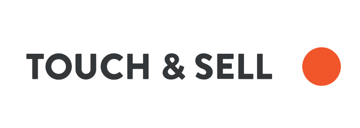
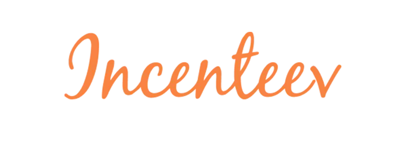
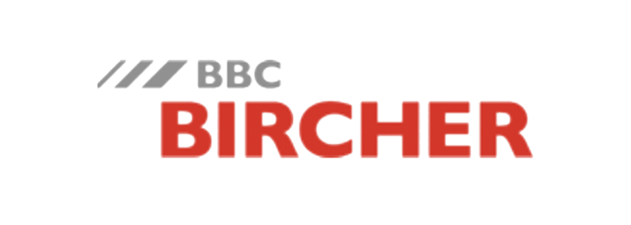
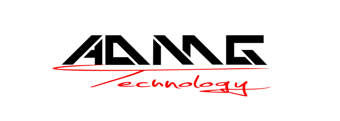
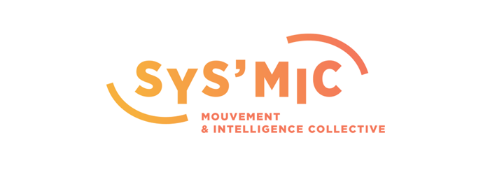
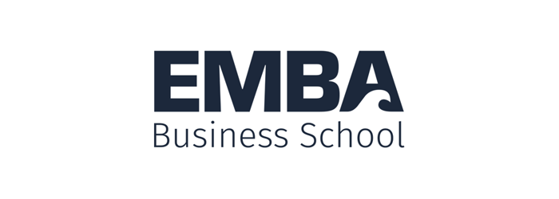

Ils nous font confiance
Digital Transformation

Pour nos clients, « Développer l’humain au coeur des échanges » signifie que nous positionnons le digital au service de la relation humaine.
Nous participons à une réhumanisation des échanges en tirant profit des outils digitaux.
Par nos outils et services, nos clients vont pouvoir se concentrer sur la relation humaine et faire ainsi progresser leurs ventes, en cohérence avec leur stratégie d’entreprise.
Nous développons, fournissons et implémentons les outils et services qui permettent à nos clients de développer une force de vente plus efficace et une relation client plus performante.

Nous sommes convaincus que l’entreprise a un rôle clé à jouer dans le progrès collectif.
Pour cela, nous collaborons avec des associations dont nous partageons les valeurs : notre communauté Open Source, Le Réseau Entreprendre, l’association Entourage/LinkedOut, Les Petits Frères des Pauvres.
Nous encourageons et soutenons toutes les initiatives des collaborateurs qui veulent s’engager dans leur communauté. Pour cadrer cette action, nous désirons inscrire cette volonté d’impact dans nos statuts pour devenir une entreprise à mission.
Industrie / Développement Commercial

L’entreprise BBC Bircher réussit avec succès sur le marché international en tant que grand fournisseur et producteur mondial.
En effet, ses deux branches d’activité spécialisées et expertes en technologie des capteurs ainsi qu’en contrôle des processus notamment pour portes et portails automatiques , lui permettent de placer au premier plan la sécurité des personnes, des véhicules et des installations avec une garantie assurée de qualité durable et accrue.

ADMG technology une start-up innovante née au sein du groupe AGF pour créer des systèmes de pointe dans l’automatisation de la métallurgie pour des tiers. Grâce à des collaborations avec diverses universités, des brevets et des technologies modernes.
ADMG a réussi à créer son propre espace de marché avec des produits très innovants. L’étude et la conception sont la base de la vie de l’entreprise, où l’accent est constamment mis sur la relation avec le client, l’attention à la qualité des produits et l’utilisation des technologies les plus modernes.
Conseils / Coaching en développement des organisations

Dans un monde globalisé, complexe et incertain, l’enjeu pour les organisations est de rebondir sur les « secousses » pour construire un avenir réussi.
Agir, avec agilité et co-responsabilité : SYS’MIC s’appuie sur le mouvement et l’intelligence collective pour faire émerger la vision partagée qui précède l’action.

l’EMBA Business School est l’école supérieure de commerce et de management de la CCI métropolitaine Bretagne ouest (CCIMBO).
Au cœur du pôle de formation universitaire et tertiaire de Creac’h Gwen à Quimper, près de Brest dans le Finistère, son campus accueille des élèves et enseignants de France et du monde entier.
Depuis plusieurs années, l’école est engagée dans un processus Qualité ambitieux et exigent, comme en témoigne la certification récente Qualiopi, obtenue en juillet 2020 pour nos actions de formation en apprentissage.